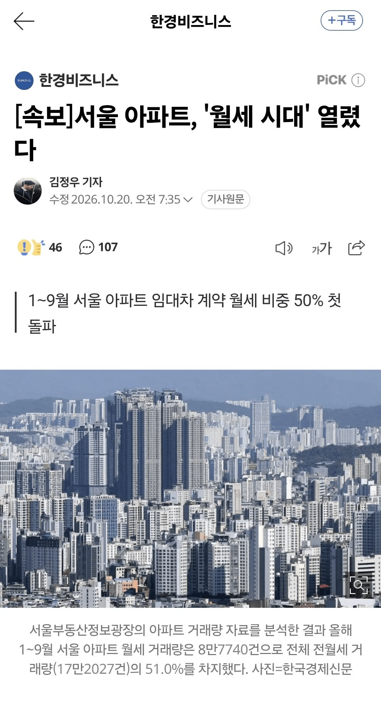

여러분이 꿈꾸던 세상

여러분이 꿈꾸던 세상
전세로 돈 떼먹고 달아난 사기범들 발생 막고 피해액 국세로 보전해주는 것보단 월세 비싸게 내는 게 낫지
정보) 아파트는 전세사기가 발생하기 어렵다
아파트는 전세사기 당하면 그 집 먹으면 되잖여....
자 이제 전세 없앴으니 사울 집값 떨어지는거 맞지?
이 시발롬들아 그렇게 자신있으면 손목이라도 걸어라
댓글들 틀린 말 안하는건 알겠는데 무슨 좌표 찍힌듯이 발작하면서 댓글 쓰는거같냐 머지
직장이 서울아니라면 서울탈출이 답이지
용인 수지에 사는데 여기도 나 사는곳 다른방은 월세 10씩 올랐더라
안오른곳도 많지만 오르는 곳들이 늘어남
뭐 단점이 있다고 해도 저게 맞는거긴해 못버티면 밀려나는게 맞지 전세로 버틴다는건 기형적 구조였지
막말로 빌라 단독은 서울에도 월세 싼곳 아직 넘쳐나는데 아파트 목매는게 이상한거지
전세사기 피해자가 생기면 안됩니다
모두가 월세사는 세상 !!!
가난 탈출 불가세상이 오고있다
그들이 만든 세상
원래 고금리로 가면 월세 반전세 이런게 많아지는거 아님?
전세때문에 그렇게 난리가 나도 전세가 없어져서 월세가 올랐다고 소리지르고 있는거 보면 참 깝깝함
정상화 되는거지 뭘 ㅋㅋㄱ
선진국들 수준에 맞춰 나가는거지
전세는 주택담보 대출의 민간 금융인데. 그걸 모르는 사람이 많지.
뭐라도 하겠지 그래도 나라인데
OECD 평균 아니냐
오히려 전세제도란게 있었다는게 더 이상했음
이게 맞긴 함
전세는 냉정히 말해서 본인의 재력으로 살 수 없는 집에 살게하는 마약같은 제도임
전세를 제대로 활용하는 경우는 월세로도 살만한 집을 전세를 통해 들어가서 절약분을 모두 저축하는건데 실제로 그런사람이 없지
10개월만에 4억 오름. 이게 맞나 싶은데 뭐 전월세였다면 절대 못누렸을 수익이지
뭐 징검다리는 부동산안정이라는 미명하게 사라졌으니
부동산안정이 과연 이루어질것이냐
여러 개붕이 좋아하는대로 글로벌스탠다드에 따라서 뉴욕 런던같이 메가시티에 걸맞는 월세로 갈것이냐
두고보면 알겠지
전세제도는 전적으로 부동산은 꾸준하게 우상향 한다는 강력한 믿음이 있어야 유지되는건데, 이미 사회가 예전에 안정화된 선진국에서는 부동산 대침체기를 이미 한번씩 겪어봤기 때문에 그런 제도가 없는거로 이해해주면 되겠어.
대침체 이후에는 다시올랐나요?
서울안살면돼 ㅋㅋ
정 상 화
개드립에서도 뭔 전세를 악마적제도로 몰더만 ㅋㅋ 아무리 생각해도 이상하던데 또 정치적인거였냐
응 서울 안 살거야 수원 자가야
저 월세라는게 반전세느낌월세인가요 ?
보증금 O억에 월세 120~140만원, 관리비는 별도
자 이제 시골로 꺼져